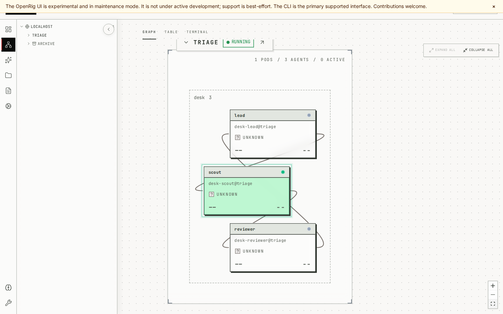

2026.10.13 · TRENDING 第 7 項成果
OpenRig 多代理團隊實驗場
OpenRig 把多個編碼代理組成一個可以啟動、查看、交接工作與還原的團隊。這個頁面呈現我們在隔離環境實際跑出的紀錄：三個席位、三次佇列交接、關閉後還原，以及訊息送達的真正意思。
OpenRig 0.6.10 stub 席位不呼叫模型
先釐清：需要多個帳號嗎？
不需要第二個帳號。官方 README 寫明可以只用 Claude Code、只用 Codex，或兩者都用，且不需要第二份訂閱。本次示範的 stub 席位不呼叫模型，所以完全不需要登入。
若要接上真實的 Claude Code 或 Codex 席位，只需要你已經有的那一個帳號；這部分我們沒有測，見下方限制。
團隊結構（實際儀表板截圖）

上圖來自示範過程中運行的 OpenRig 網頁介面（官方標示此介面處於維護模式，命令列才是主要介面）。三個席位在 desk 群組中：lead 派工給 scout，scout 交給 reviewer，reviewer 回報 lead。
三次真實的佇列交接
每一筆都是 OpenRig 佇列中的真實紀錄，狀態來自 rig queue show。交接會把原項目結案並在下一席建立新項目，所以最後一筆才由 lead 驗收完成。
關閉後還原：為什麼需要 --fresh
| 操作 | 三個席位的結果 |
|---|---|
rig up triage --existing | |
rig up triage --existing --fresh … |
需要 --fresh 的原因：這些席位重啟後沒有可續接的 session 狀態（官方原始碼的檢查是「沒有擷取到 resume token」）。OpenRig 不會悄悄開出一個沒有記憶的新席位，而是停在「等待你決定」。真實的 Claude Code 或 Codex 席位若有續接憑證，才可能直接續接；我們沒有測。
訊息送達不等於已讀
對席位執行 rig send --verify 的結果是 。官方說明它只代表訊息出現在目標終端；stub 沒有輸入迴圈，不會讀取或回覆。
自己玩一遍
cd openrig && npm ci cd .. bash scripts/openrig_demo.sh --out /tmp/openrig-run --shots # 結果在 /tmp/openrig-run/run.json 與 /tmp/openrig-run/shots/
腳本在獨立的 HOME、OPENRIG_HOME 與 tmux socket 中執行，結束後自動停止 daemon 並刪除暫存，同時比對你的 ~/.codex、~/.claude、~/.tmux.conf 在執行前後沒有變動。完整教學見 OpenRig 操作教學。